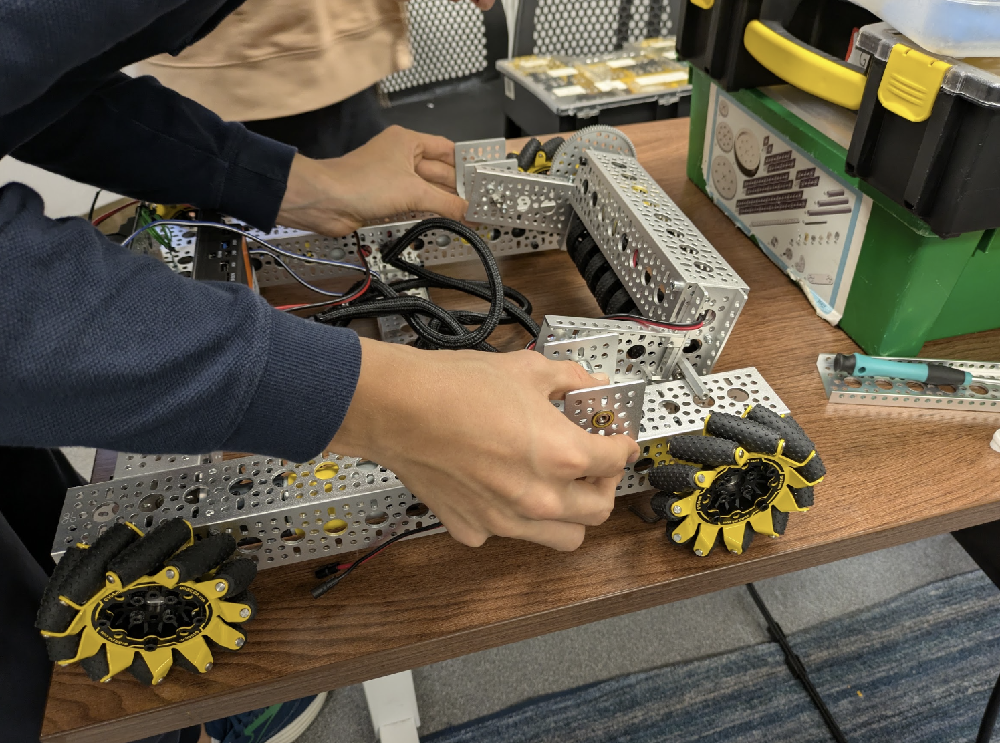

Ways to Get Involved

Joining our mission is super easy and makes a huge difference! If you want to join but are not sure how yet, here are some options below:
- Become a tutor: Share your knowledge in engineering, programming, and STEM through becoming a tutor
for Path to Parallel. If you're unsure about currciulum, don't worry! After you sign up, a resource packet will
be sent to your inbox. For more information, refer to the Become a tutor section to the right, or on smaller screens, below.
- Become a volunteer: If you're looking for less of a time commitment, or just enjoy organizational aspects of planning, become a volunteer!
You could help out to write articles, plan a local Path to Parallel teaching event, or help out at a local one! If interested, send an email to info@pathtoparallel.org
- Donate your old supplies: Donations of old computers, hardware, rasberry pi's or any general engineering supplies (including filament!) is alwasy more than appreciated! If interested,
click the button below and fill out the donation form.